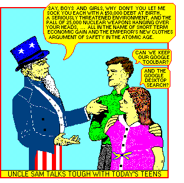

Hobbes’ first argument towards proving man’s equality looks at the difference between a man who is strong and a man who is cunning. Hobbes states, “The weakest has strength enough to kill the strongest, either by secret machinations, or by confederacy with others.” It is Hobbes intention to show that if a man works to make his life more convenient, he will be successfully contested when men band together to deprive him. This idea proves to Hobbes that men are equal in their ability to bring their will to action.
His next argument states that all men are able to become equally experienced, if they have the same amount of time and study the same things. Hobbes believes that any claim of the opposite can be attributed to excessive pride in the individual: “That which perhaps make such equality incredible, is but a vain conceit of one’s own wisdom.” Hobbes agrees that this is much the case in man’s nature, and that men believe they are wiser than others; because they can witness their own mental ability, but only see another man’s from the outside: “For they see their own wit at hand, and other men’s at a distance.”
Hobbes notes that these equal abilities and ways of seeing create a state of doubt for men. He argues that if two men want what only one can enjoy, they will become enemies as they seek their own conservation and enjoyment. Man must anticipate war and seek to control as many others as he can; thereby assuring his own conservation if larger forces seek to overthrow him. Hobbes sees that “such augmentation of dominion over men being necessary to a man’s conservation, it ought to be allowed him.”
Through these arguments, Hobbes demonstrates that man has a tendency of war against every other man if he lives without a common power to keep attackers away.
In such condition, there is no place for industry; because the fruit thereof is uncertain: and consequently no culture of the earth; no navigation, nor use of the commodities that may be imported by sea; no commodious building; ... and which is worst of all, continual fear, and danger of violent death.
Hobbes sees that through government men are able to hand over their need for violence to a ruling body; the ruling body creates order and justice lacking in man’s nature, and defends them as a man would defend his own conservation.
Unlike Hobbes’ argument for confederacy making equal, I believe that men are stronger through community—not because it advances a will of competition, but because it furthers the groups conservation without contention with others. Darwin notes that if one tribe member invents a new trap or weapon, other members will imitate him in “the plainest self-interest, without the assistance of much reasoning power … and all would thus profit.” Only through experiencing one man’s greater wit, can the community reach equal standing; and the group will achieve greater ease of conservation without governing or contention. I see through this occurrence that men are not contented with their share of intellect when they observe that skills and crafts of their fellows are more pragmatic than their own. Men admit there are differences among them when they choose to imitate and learn from those they believe to have knowledge that will make them stronger as a group.
If two men in contention are equal in skill and experience, and the prize is essential to their security, it will be the one that has the stronger moral bond with his community that will supplant the other. I believe this moral faculty is innate within a social community without a physical government, as Darwin supports with his observations of praise and reproach in the tribe; “that the members of the same tribe would approve of conduct which appeared to them to be for the general good, and reprobate that which appeared evil.” This moral faculty is rooted in man’s instincts of sympathy. Darwin notes that, “even dogs appreciate encouragement”, as a testament to sympathetic responses in many species. He writes that, “Ultimately a highly complex sentiment, having its first origin in the social instincts, largely guided by the approbation of our fellowmen, ruled by reason, self-interest, and … confirmed by instruction and habit, all combined, constitute our moral sense of conscience.”
Darwin links this approbative activity with the building of sympathy, fidelity, and courage within a group. Individuals that work together receive approval from each other, while not working together brings shame and failure to the group: “Selfish and contentious people will not cohere, and without coherence nothing can be effected.” In return to the instance of two equally matched men contending over a single necessity, the one with the stronger moral bond amongst his fellows will gain the prize; because they are “always ready to warn each other of danger [and] to aid and defend each other.”
The disposition to reciprocity, fostered from receiving approval by the group for acts which work to further the community, is a strong argument against the faculty of justice being present only in states governed by selected heads. Darwin sees that “to do good unto others … is the foundation-stone of morality”; and I add that it is a strong morality—that includes reciprocity—which is naturally occurring in man’s social nature, and which creates a state of justice that remains without governance.

as seen on http://www.scroogle.org/cgi-bin/scraper.htm
PEACE - Tristan
before || after